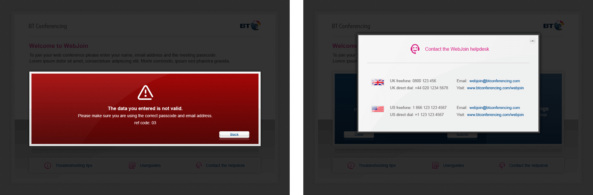

User experience and interface design portfolio.
BT WebJoin
Designed during my time at BT, the project involved me taking responsibility for both the user experience and visual design work for a web based teleconferencing app. The tight deadlines involved meant that it had to quickly move from paper sketches into fully fledged Photoshop designs, often in tandem throughout the process.

